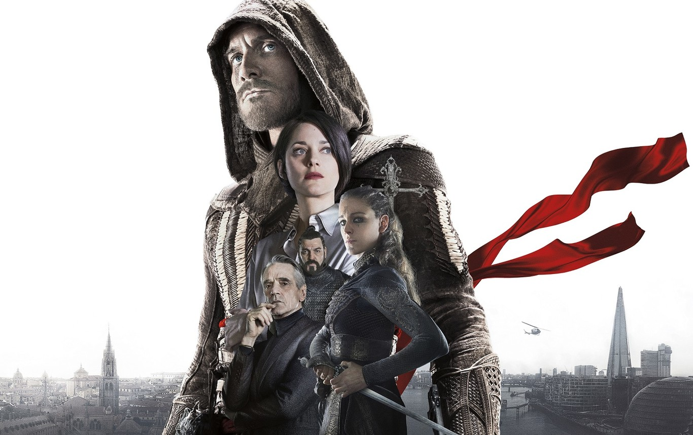

La historia de Assassin's Creed
Assassin's Creed es una de las franquicias de videojuegos más emblemáticas de Ubisoft, reconocida mundialmente por su mezcla de acción, aventura, historia y exploración. Su origen se remonta al año 2007, cuando Ubisoft Montreal lanzó el primer título de la saga. Concebido inicialmente como un spin-off de la serie Prince of Persia, el proyecto evolucionó hacia un concepto propio, centrado en una narrativa que combina elementos históricos y ficticios.
El inicio de la saga
El primer juego de Assassin's Creed nos introduce en la historia de Desmond Miles, un barman aparentemente ordinario que, tras ser secuestrado por una misteriosa organización llamada Abstergo Industries, es obligado a revivir los recuerdos de sus antepasados a través de una tecnología llamada Animus. En esta entrega, el jugador toma el control de Altaïr Ibn-La'Ahad, un asesino que opera en Tierra Santa durante la Tercera Cruzada.
La trama gira en torno a la lucha entre dos facciones secretas: los Asesinos, que buscan preservar el libre albedrío, y los Templarios, que buscan el control absoluto para instaurar un supuesto orden mundial. Con un mundo abierto innovador, mecánicas de sigilo revolucionarias y una fidelidad histórica impresionante, el juego se destacó como una obra maestra de su tiempo.
Éxito y legado
Desde su lanzamiento, Assassin's Creed recibió aclamación crítica y comercial, vendiendo millones de copias en todo el mundo. La combinación de una narrativa profunda, un diseño visual impresionante y la exploración de ciudades históricas como Jerusalén, Acre y Damasco cautivaron a los jugadores. Este éxito sentó las bases para una franquicia que continuaría expandiéndose con múltiples entregas, explorando distintas épocas como el Renacimiento, la Revolución Americana, la Edad Vikinga, entre otras.
Con cada nueva entrega, la saga creció en complejidad y popularidad, consolidándose como uno de los pilares de la industria del videojuego.
El salto al cine

Tras años de éxito en el ámbito de los videojuegos, la franquicia dio el salto al cine con el estreno de la película Assassin's Creed en 2016, dirigida por Justin Kurzel y protagonizada por Michael Fassbender. La película se inspiró en el universo del juego, aunque presentó una historia original. En ella, Fassbender interpreta a Callum Lynch, un descendiente de asesinos que revive los recuerdos de su ancestro Aguilar de Nerha, durante la Inquisición española, mientras Abstergo intenta localizar un artefacto poderoso conocido como "la Manzana del Edén".
Si bien la película buscó capturar la esencia de los juegos, mezclando acción, drama y elementos históricos, recibió críticas mixtas. A pesar de ello, fue un hito para la franquicia, marcando la capacidad de los videojuegos de expandirse exitosamente a otros medios.
Conclusión
Desde sus inicios en 2007 hasta convertirse en un fenómeno multimedia, Assassin's Creed ha demostrado ser una franquicia que trasciende generaciones y formatos. Con un legado que incluye videojuegos, novelas, cómics y una película, la saga continúa siendo una fuente de inspiración para millones de fanáticos alrededor del mundo, consolidándose como una de las historias más icónicas de la cultura pop contemporánea.
Link al primer trailer
¿Por qué lo elegimos?
Elegimos Assassin's Creed como base para crear nuestra historia interactiva y el videojuego porque, para nosotros, representa algo especial tanto en lo personal como en lo creativo. Fue uno de los primeros juegos que jugamos cuando éramos chicos, y desde ese momento nos fascinó su forma de mezclar historia, acción y exploración. Crecimos con la franquicia, y siempre nos impresionó cómo lograba transportarnos a épocas tan distintas, desde la Tercera Cruzada hasta la Revolución Americana.
Además, la película también nos marcó porque mostró otra faceta del universo de Assassin's Creed. Aunque no es perfecta, apreciamos cómo tomó riesgos al presentar un Animus diferente y al profundizar en la idea de explorar los recuerdos de los ancestros. Esto nos inspiró a imaginar cómo podríamos combinar lo que nos gusta del cine y los videojuegos para crear algo único.
Lo elegimos porque sentimos una conexión personal con la saga. Es más que un juego o una película para nosotros; es una parte de nuestra infancia y algo que seguimos disfrutando a lo largo de los años. Por eso creemos que es el punto de partida perfecto para desarrollar un proyecto que no solo homenajea a la franquicia, sino que también nos permite explorar nuestra creatividad y rendir tributo a algo que nos marcó desde chicos.
Nuestra Experiencia creando la historia y el juego
Crear una historia interactiva y un videojuego inspirado en la película y la saga Assassin's Creed fue una experiencia tan desafiante como gratificante para nosotros. Al principio, nos costó mucho adaptarnos a p5.js, entender su lógica y aprovechar todas las herramientas que nos ofrecía. Hubo momentos en los que sentimos que el proceso se volvía complicado, pero con paciencia y dedicación logramos avanzar.
Para la historia interactiva, tuvimos que volver a ver la película y analizar sus detalles en profundidad. Esto nos permitió identificar los momentos clave y generar nuevas ideas. Diseñamos un diagrama donde decidimos saltar algunas partes del guion original y crear rutas alternativas con finales completamente nuevos. Esta etapa fue crucial porque nos permitió mantener la esencia de Assassin's Creed mientras añadíamos nuestra propia creatividad e innovación.
Cuando llegó el momento de crear el videojuego, el reto fue aún mayor. Decidimos desarrollar un juego dinámico donde el jugador interactúa con una mecánica similar a un clásico arcade, pero dándole un toque único inspirado en la saga. En este caso, la bola que rebota fue reemplazada por un shuriken, y utilizamos de fondo una de las imágenes creadas para la historia interactiva, logrando una conexión temática entre ambos proyectos. Cada detalle del diseño se pensó para evocar la atmósfera de Assassin's Creed, desde los colores hasta los pequeños guiños a su estética característica.
Aunque el proceso de creación fue tedioso y lleno de desafíos, al final disfrutamos mucho diseñar estas dos experiencias basándonos en algo que tanto nos apasiona. Logramos combinar nuestra creatividad con el universo de Assassin's Creed, y eso hizo que todo el esfuerzo valiera la pena.